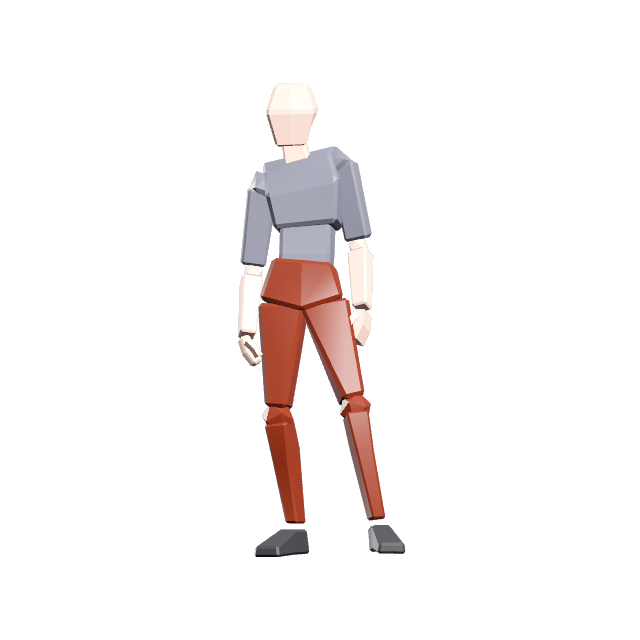

ELEGON
DB
Items
Monsters
Quests
Maps
Character
Planner
Scaling
Character planner
Class
Character level
Rarity, all slots
Apply
Instability, all slots
Apply
Clear all
Saved builds
Save this build as
Save
Share
Copy link

Character art unavailable.
Attribute points
39
Proficiencies
0
Item Level
0
Attributes
Spells
Buffs
0
Talent rank
Attribute points
Reset
Close
Character level
Proficiencies
Max all
Reset
Close
Choose item
Empty slot
Close
Has stat
Instability
Self buffs
None active
Close